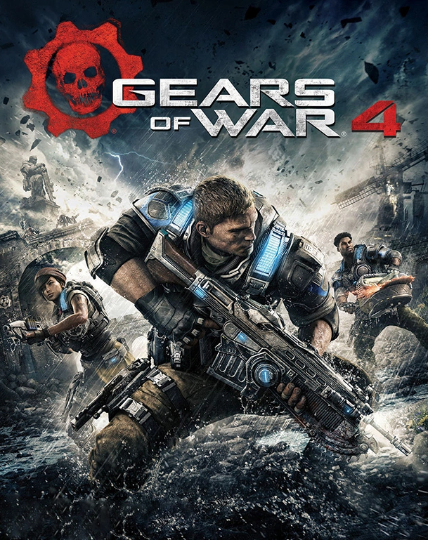

ESTA PÁGINA ES SOLO UNA FAN-PAGE DE GEARS OF WAR
Gears of War es una saga de videojuegos creada por Epic Games
, con títulos en nuestra base de datos desde 2006 y que actualmente cuenta con un total de 12 juegos para Xbox Series X/S, iPhone, Android, Xbox One, PC, Xbox 360.
En esta página encontrarás el listado completo con todos los juegos de Gears of War que existen, ordenados según su fecha de lanzamiento para que puedas saber cuál es el último juego de Gears of War que se ha anunciado o que ya ha salido a la venta, y cuál fue el primer juego de todos con el que se inició la saga.
Además te mostramos la nota que le han dado nuestros analistas a todas las entregas que han ido saliendo, para que sepas cuál es el mejor juego de Gears of War de toda la historia.
Gears of war
Narrativa del primer video juego (resumen)
Gears of War para Xbox 360 (Shooter en tercera persona).
|- Calificación que recibe: 9.4.
|- Fecha de salida en PC · 9/11/2007.
|- Fecha de salida en X360 · 17/11/2006.
Es un novedoso juego de acción en tercera persona en el que tendremos que combatir en un mundo apocalíptico contra la raza de los Locust, usando el escenario para cubrirnos. Espectacular a nivel gráfico y con un modo cooperativo que podemos jugar tanto a través de Internet como con un amigo en la misma consola.
Ver imagen
Gears of war 2
Narrativa del segundo video juego (resumen)
Gears of War 2 (Shooter en tercera persona).
|- Calificación que recibe: 9.5.
|- Fecha de salida en X360 · 7/11/2008.
Marcus Fénix, Dom y compañía regresan en una secuela que llevará la guerra contra los Locust a las profundidades del planeta. Se incluye el modo multijugador cooperativo Horda, en el que varios jugadores resisten a oleadas de enemigos de cada vez mayor fuerza y número.
Ver imagen
Gears of war 3
Narrativa del tercer video juego (resumen)
Gears of War 3 (Shooter en tercera persona).
|- Calificación que recibe: 9.5.
|- Fecha de salida en X360 · 20/9/2011.
La guerra de la humanidad contra los Locust continúa, en una secuela que tendrá más variedad de escenarios, nuevas armas, entre ellas una cooperativa, y nuevos modos multijugador, como el Horda 2.0, en el que tendremos que usar fortificaciones para hacer frente a oleadas de enemigos de número y fuerza creciente.
Ver imagen
Gears of war: Judgment
Narrativa del primer video juego expansivo(resumen)
Gears of War 4 (Shooter en tercera persona).
|- Calificación que recibe: 8.7.
|- Fecha de salida en X360 · 22/3/2013.
Esta precuela ambientada antes de los acontecimientos de la trilogía de Gears of War y desarrollada por People Can Fly, los creadores de Bulletstorm, nos cuenta la historia de Baird, uno de los personajes de la saga, quince años antes del primer Gears of War, es decir, del "Emergence Day", cuando los Locust salen de las profundidades. La historia nos contará la historia del Team Kilo, liderado por Baird, que ha sido acusado de crímenes militares. Otros personajes de la saga aparecen, como Cole Train, Garron Paduk o Sophia Hendricks. Cuenta con nuevos modos multijugador más orientados a la acción.
Ver imagen
Gears of war 4
Narrativa del cuarto video juego (resumen)
Gears of War 4 (Shooter en tercera persona).
|- Calificación que recibe: 8.7.
|- Fecha de salida en X360 · 11/10/2016.
Se trata de la secuela de la reconocida serie de juegos de disparos en tercera persona, esta vez para Xbox One que progresará en la jugabilidad de la serie manteniendo el componente emocional de la historia y que sacará provecho de el ya popular modo multijugador. El juego nos volverá a traer las historia de la guerra infinita contra los enemigos que amenazan a la humanidad y la lucha por salvar a los pocos supervivientes de el conflicto iniciado el terrible día D y que cambió el rumbo de la historia de la humanidad.

Ver imagen
Gears of war 5
Narrativa del quinto video juego (resumen)
Gears of War 5 (Shooter en tercera persona).
|- Calificación que recibe: 9.3.
|- XSX · 10/11/2020.
|- XBOne PC · 10/9/2019.
Gears of War 5 es la nueva entrega de la emblemática saga de acción en tercera persona Gears of War para PC y Xbox One. De la mano de The Coalition, en esta ocasión la protagonista de esta aventura de tiros con numerosas oleadas de extraterrestres será Kait, apostando por volver a las raíces de la serie y mostrar un estilo gráfico y artístico más novedoso y arriesgado. Además, será el primer videojuego de Gears of War que adopte una estructura similar a la de mundo abierto.
Ver imagen
Gears Tactics
Narrativa del primer video juego táctico (resumen)
Gears Tactics (Estrategia / Estrategia por turnos).
|- Calificación que recibe: 7.5.
|- XBOne XSX · 10/11/2020.
|- PC · 28/4/2020.
Gears Tactics es el nuevo videojuego de estrategia y acción táctica desarrollado or Splash Damage y The Coalition para Xbox One y PC. Ambientado en el mundo de ciencia ficción de la saga Gears of War, nos narrará los hechos ocurridos 12 años antes del primer título de la serie. Conociendo a Gabe Díaz, lucharemos contra la amenaza Locust y Ukkon, su líder y creador.
Ver imagen